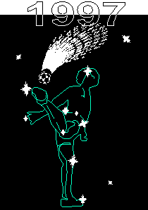

|  | ||
| WORLD FOOTBAG CHAMPIONSHIPS | ||
| OFFICIAL RESULTS | ||
|
The complete results are available below for each player in each event. Click on an
event below to see the results for that event. Scores for consecutives and golf
events are given where applicable; detailed freestyle score breakdowns
are available in a separate "breakdowns" report.
For more information on this event which has now concluded, see the Worlds '97 Home Page. The latest Worlds information can always be found at <http://www.footbag.org/worlds>. |
Overall Rankings
Open Division
Women's Division
Intermediate Division
Women's Intermediate Division
|
|
|